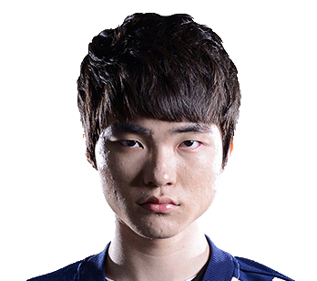
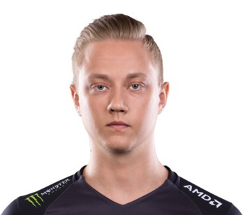

Every gamer needs to be properly fueled for a night of gaming. Our water can provide a nice alternative for those who’d prefer not to go into an energy drink-induced delirium (you know, where one minute you’re trying to lift a curse, and the next the Cypress witch is emerging through your monitor Ring-style). Besides, a constant energy rush isn’t the best thing to do to your body. So, if anyone makes fun of your choice of gaming drink, just remind them our water gives you c ognitive super powers! water It’s also a great option for those especially hot days when you’re playing games inside. Keeping hydrated is also a good idea during the dog days of summer, and nothing can beat water there
 One of the newest team in the field of professional gaming, the team “Mid-or-feed” is one of the most promising “fresh meat” team in the League of Legends Championship. Because we have seen the big potential in this team, we decide that we must give them a little impetus, so we start sponsoring this team with our healthy product. We know that our product will help them to keep up with all the long nights of training for the championship. After the first week of using our product, they were more than impressed by its effectiveness.
 One of the newest team in the field of professional gaming, the team “Mid-or-feed” is one of the most promising “fresh meat” team in the League of Legends Championship. Because we have seen the big potential in this team, we decide that we must give them a little impetus, so we start sponsoring this team with our healthy product. We know that our product will help them to keep up with all the long nights of training for the championship. After the first week of using our product, they were more than impressed by its effectiveness.
 Martin Larsson, known as REKKLES(22 years old). is a professional gamer from Sweden. He’s playing for Fnatic, a well known team from United Kingdom. He always wants to be focused on his game no matter what and to have the best results. He’s also a very active person even if he’s sitting at least 8 hours per day. He really enjoys going to the gym and running because he can’t handle the sedentariness of his job. He doesn’t trust energy drinks or their alleged effect and he sometimes doesn’t have time for making smoothies, so he’s looking for a better option, a quicker one regarding how he’s going to stay hydrated and giving his body all needed vitamins and minerals during the gaming sessions or during a tournament.